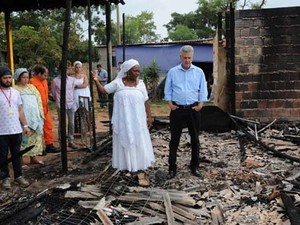

Caso no Distrito Federal - Religião Afro-Brasileira
O primeiro caso que citaremos aqui ocorreu no Distrito Federal no dia 28 de Novembro de 2015 e consistiu a um ataque em um Espaço de Candomblé, pessoas incendiaram o local, não houveram feridos. Saiba mais aqui.
Caso no Distrito Federal - Religião Afro-Brasileira
O segundo caso que citaremos aqui também ocorreu no Distrito Federal no dia 29 de Dezembro de 2015 e consistiu a um ataque a uma estátua de um orixá na Prainha do Lago Paranoá. Saiba mais aqui.

Caso no Rio de Janeiro - Religião Afro-Brasileira
O terceiro caso que citaremos aqui ocorreu no Rio de Janeiro no dia 16 de Junho de 2015 e consistiu a um ataque a uma garota de apenas onze anos, que tomou uma pedrada na cabeça após sair de um encontro de Candomblé. Saiba mais aqui.
Caso em São Paulo - Religião Católica
O quarto caso que citaremos aqui ocorreu no Botucatu, SP no dia 10 de Dezembro de 2018 e consistiu em uma pastora evangélica quebrando a marteladas uma imagem de Nossa Senhora Aparecida (Padroeira da Religião Católica).Saiba mais aqui.

Estes são apenas alguns casos de intolerância religiosa no Brasil. Caso você queira ver mais casos e notícias, pode acessar este documento que tem uma análise completa sobre a intolerância religiosa no brasil.